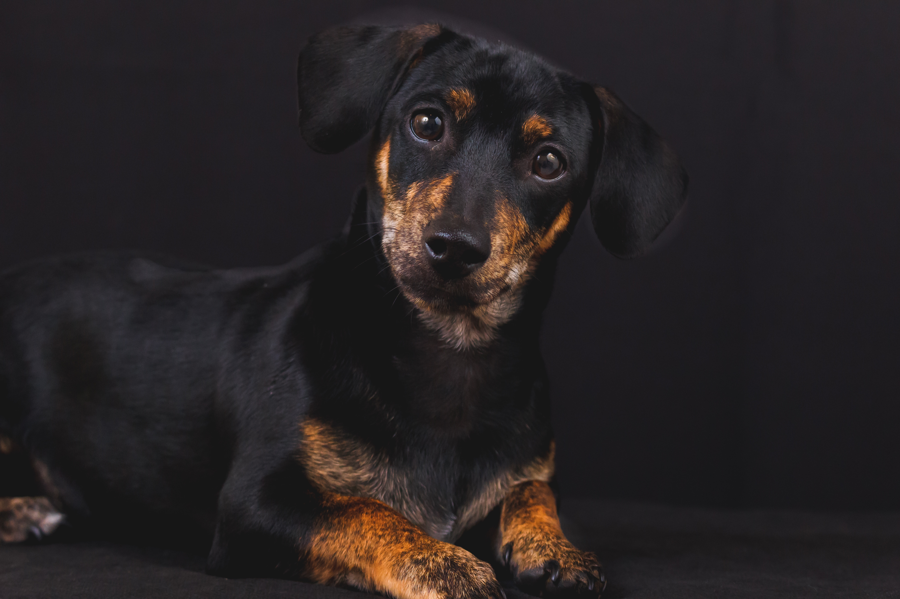
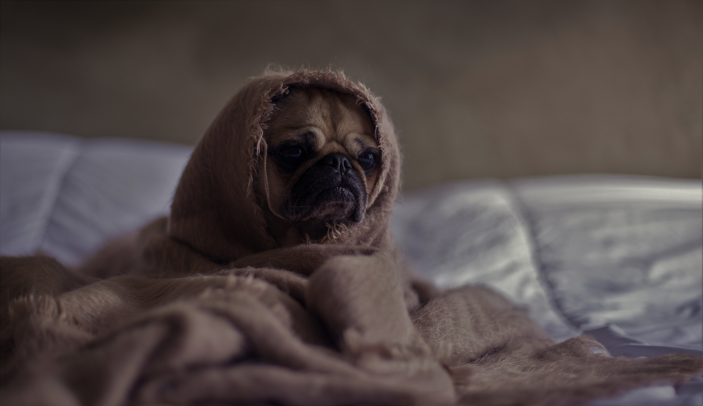

OS CACHORROS SÃO CAPAZES DE NOS ENTENDER!
Elem nos compreendem. Cães são animais muito bem qualificados para interpretar gestos e sinais humanos.

O CACHORRO PODE SER SEU COMPANHEIRO!
Para aqueles que vivem sozinhos, ter um cão é a melhor solução. Nunca mais você chegará em sua casa e ela estará vazia, você sempre terá um ser de bom humor a sua espera e que te receberá com carinho e “um sorriso”.

OS CACHORROS TÊM SENTIMENTOS!
Os cachorros têm o hormônio ocitocina, aquele que segregamos quando estamos apaixonados ou sentimos afeto pelos outros.